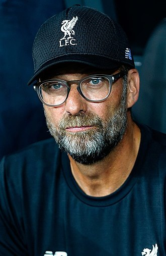

<!DOCTYPE html>
<html lang="en"></html>
<head>
    <meta charset="UTF-8">
    <meta name="viewport" content="width=device-width, initial-scale=1.0">
    <title>FirstPage</title>
    
    <style>
     header{
            background-color: rgb(168, 5, 38);
            text-align: center; 
            
        }
        div.first{
            color: ghostwhite;
            background-color: rgb(168, 5, 38);
       
        }
        div.second{
            color: ghostwhite;
            background-color: rgb(168, 5, 38)

        }
        div.third{
            color: ghostwhite;
            background-color: rgb(168, 5, 38)

        }
    </style>
    

    
</head>
<body>

    <header
  
    <center>  </center>
    <center><h1>  <span style="color: ivory;">LIVERPOOL</span>   </h1></center> 
    
    </header>
    <div class="first">
    <p>
       <center>
             <q>A lot of football success is in the mind. You must believe you are the best and then make sure that you are.</q>
             
            
            <cite>- Bill Shankly</cite>
    </p>
       </center>
  
       <p>    
        <!-- hope Adrian Dies-->
       <a href="https://www.liverpoolfc.com/" target="blank"><b>Liverpool Football Club</b></a> is a professional football club in Liverpool, England, that competes in the Premier League, the top tier of English football. 
        Domestically, the club has won <b>19</b> <i>League titles</i>, <b>7</b> <i>FA Cups</i>, a record <b>8</b> <i>League Cups</i> and  <b>15</b> <i>FA Community Shields</i>.
        Not to mention the club's success in Europe which comprises of <b>6</b> <i>Champions League trophies</i>. 
        <p>
            Founded in 1892, the club joined the Football League the following year and has played at Anfield since its formation. Liverpool established itself as a major force in English and European football in the 1970s and 1980s, when Bill Shankly, Bob Paisley, Joe Fagan and Kenny Dalglish led the club to a combined eleven League titles and four European Cups. Liverpool won two further European Cups in 2005 and 2019 under the management of Rafael Benítez and Jürgen Klopp, respectively, the latter of whom led Liverpool to a nineteenth League title in 2020, the club's first during the Premier League era.
        </p>
        <p>
            One of the most widely supported teams in the world, in 2019, Liverpool was the world's seventh-highest-earning football club, with an annual revenue of €604 million, and the world's eighth-most-valuable football club, valued at $2.183 billion. Liverpool has long-standing rivalries with Manchester United and Everton. The team changed from red shirts and white shorts to an all-red home strip in 1964 which has been used ever since. The club's anthem is "You'll Never Walk Alone".
        </p>
        <p>
            The club's supporters have been involved in two major tragedies: the Heysel Stadium disaster, where escaping fans were pressed against a collapsing wall at the 1985 European Cup Final in Brussels, with 39 people – mostly Italians and Juventus fans – dying, after which English clubs were given a five-year ban from European competition; and the Hillsborough disaster in 1989, where 96 Liverpool supporters died in a crush against perimeter fencing, which led to the elimination of fenced standing terraces in favour of all-seater stadiums in the top two tiers of English football.
        </p>
      </p>

    </div>
    <div class="second">
    <center><h2> Team Liverpool </h2></center>
            
          <center> 
          <table border="2"  cellspacing="2" cellpadding="5"> 
             
            <thead> 
                <tr>
                    <th>Number</th>
                    <th>Position</th>
                    <th>Nation</th>
                    <th>Player</th>
               </tr> 
              </thead>
              
                 <tbody> 
                    <tr align="center">
                        <td>1</td> 
                        <td>GK</td>
                        <td>Brazil</td>
                        <td>Alisson Becker</td>
                    </tr>
                    <tr align="center">
                       <td>3</td>
                       <td>MF</td>
                       <td>Brazil</td>
                       <td >Fabinho</td>
                   </tr>
                   <tr align="center">
                       <td>4</td>
                       <td>DF</td>
                       <td>Netherlands </td>
                       <td>Virgil van Dijk</td>
                   </tr>
                   <tr align="center">
                       <td>5</td>
                       <td>MF</td>
                       <td>Netherlands </td>
                       <td>Georginio Wijnaldum</td>
                   </tr>
                   <tr align="center">
                       <td>6</td>
                       <td>MF</td>
                       <td>Spain</td>
                       <td>Thiago Alcântara</td>
                   </tr>
                   <tr align="center">
                       <td>7</td>
                       <td>MF</td>
                       <td>England</td>
                       <td>James Milner</td>
                   </tr>
                   <tr align="center">
                       <td>8</td>
                       <td>MF</td>
                       <td>Guinea</td>
                       <td>Naby Keïta</td>
                   </tr>
                   <tr align="center">
                       <td>9</td>
                       <td>FW</td>
                       <td>Brazil</td>
                       <td>Roberto Firmino</td>
                   </tr>
                   <tr align="center">
                       <td >10</td>
                       <td >FW</td>
                       <td >Senegal</td>
                       <td >Sadio Mané</td>
                   </tr>
                   <tr align="center">
                       <td>11</td>
                       <td>FW</td>
                       <td>Egypt</td>
                       <td> Mohamed Salah</td>
                   </tr>
                   <tr align="center">
                       <td>12</td>
                       <td>DF</td>
                       <td>England</td>
                       <td> Joe Gomez</td>
                   </tr>
                   <tr align="center">
                       <td>13</td>
                       <td>GK</td>
                       <td>Spain</td>
                       <td> Adrián</td>
                   </tr>
                   <tr align="center">
                       <td>14</td>
                       <td>MF</td>
                       <td>England  </td>
                       <td>Jordan Henderson</td>
                   </tr>
                   <tr align="center">
                       <td>15</td>
                       <td>MF</td>
                       <td>England  </td>
                       <td>Alex Oxlade-Chamberlain</td>
                   </tr>
                   <tr align="center">
                       <td>17</td>
                       <td>MF</td>
                       <td>England  </td>
                       <td>Curtis Jones</td>
                   </tr>
                   <tr align="center">
                       <td>18</td>
                       <td>FW</td>
                       <td>Japan</td>
                       <td>Takumi Minamino</td>
                   </tr>
                   <tr align="center">
                       <td>20</td>
                       <td>FW</td>
                       <td>Portugal</td>
                       <td>Diogo Jota</td>
                   </tr>
                   <tr align="center">
                       <td>21</td>
                       <td>DF</td>
                       <td>Greece</td>
                       <td> Kostas Tsimikas</td>
                   </tr>
                   <tr align="center">
                       <td>23</td>
                       <td>FW</td>
                       <td>Switzerland</td>
                       <td> Xherdan Shaqiri</td>
                   </tr>
                   <tr align="center">
                       <td >26</td>
                       <td >DF</td>
                       <td >Scotland</td>
                       <td > Andrew Robertson</td>
                   </tr>
                   <tr align="center">
                       <td>27</td>
                       <td>FW</td>
                       <td>Belgium</td>
                       <td> Divock Origi</td>
                   </tr>
                   <tr align="center">
                       <td >32</td>
                       <td >DF</td>
                       <td >Cameroon</td>
                       <td >Joël Matip	</td>
                   </tr>
                   <tr align="center">
                       <td >47</td>
                       <td >DF</td>
                       <td >England  </td>
                       <td > Nathaniel Phillips	</td>
                   </tr>
                   <tr align="center">
                       <td >58</td>
                       <td >FW</td>
                       <td >England  </td>
                       <td >Ben Woodburn	</td>
                   </tr>
                   <tr align="center">
                       <td>59</td>
                       <td>MF</td>
                       <td>Wales</td>
                       <td> Harry Wilson</td>
                   </tr>
                   <tr align="center">
                       <td >62</td>
                       <td >GK</td>
                       <td >Ireland</td>
                       <td > Caoimhín Kelleher</td>
                   </tr>
           
                   <tr align="center">
                       <td >66</td>
                       <td >DF</td>
                       <td >England</td>
                       <td >Trent Alexander-Arnold</td>
                   </tr>
                   <tr align="center">
                       <td >67</td>
                       <td >MF</td>
                       <td >England  </td>
                       <td >Harvey Elliott</td>
                   </tr>
                   <tr align="center">
                       <td >72</td>
                       <td >DF</td>
                       <td >Netherlands</td>
                       <td > Sepp van den Berg</td>
                   </tr>
                   <tr align="center">
                       <td >76</td>
                       <td >DF</td>
                       <td >Wales</td>
                       <td >Neco Williams</td>
                   </tr>
                 </tbody>      
             
             </table>
             </center>
    
            </div>

   <div class="third">
     <center><h3> Manager </h3></center>
     <center>  </center>
     <center><p><b> Jürgen Klopp</b> <br></center> 
        Jürgen Norbert Klopp is a German professional football manager and former player who is the manager of Premier League club Liverpool. He is widely regarded as one of the best managers in the world. Klopp spent most of his playing career at Mainz 05; a hard-working and physical player, he was initially deployed as a striker, before being moved to defence. Upon retiring in 2001, Klopp became the club's manager, and secured Bundesliga promotion in 2004. After suffering relegation in the 2006–07 season and unable to achieve promotion, Klopp resigned in 2008 as the club's longest-serving manager. He then became manager of Borussia Dortmund, guiding them to the Bundesliga title in 2010–11, before winning Dortmund's first-ever domestic double during a record-breaking season. 
        Klopp also guided Dortmund to a runner-up finish in the 2012–13 UEFA Champions League before leaving in 2015 as their longest-serving manager. Klopp was appointed manager of Liverpool in 2015. He guided the club to successive UEFA Champions League finals in 2018 and 2019, winning the latter to secure his first – and Liverpool's sixth – title in the competition. Klopp's side finished second in the 2018–19 Premier League, registering 97 points; the then third-highest total in the history of the English top division, and the most by a team without winning the title. The following season, Klopp won the UEFA Super Cup and Liverpool's first FIFA Club World Cup, before delivering Liverpool's first Premier League title, en route to which his side scored 99 points – the second-highest total in the English top division – and broke a number of top-flight records.
        Klopp is a notable proponent of Gegenpressing, whereby the team, after losing possession, immediately attempts to win back possession, rather than falling back to regroup. His sides have been described as playing 'heavy metal' football by pundits and fellow managers, in reference to their pressing and high attacking output. Klopp has cited his main influences as Italian coach Arrigo Sacchi, and former Mainz coach Wolfgang Frank. The importance of emotion is something Klopp has underlined throughout his managerial career, and he has gained notoriety for his enthusiastic touchline celebrations
            </p>
  </div>
  <footer></footer>
<h4>Contacts</h4>
<a href="mailto:rezwanahmed007@gmail.com">rezwanahmed007@gmail.com</a> <br>
<a href="skype:rezwanahmed007@gmail.com">skype </a>  
</footer>
</body>
</html>
